INTRODUCTION - PANELS AND FRAME
- Path
- Descriptions > 72 PANELS AND FRAME > INTRODUCTION - PANELS AND FRAME
- Kind
- system description
- Applies to
- all engines; all production periods
- Interactive page
- https://sloeber94.github.io/elrnDB-aGt/en/#/125000446
Applies to: all engines; all production periods
SPECIFICATIONS
The structure of the vehicle has been designed to respond to all situations in an optimum manner guaranteeing a high level of passive safety for the driver and passengers.
The parts that protrude from the car's exterior profile, with its flush-fitted windows, and the underbody have been designed with particular attention to lowering resistance of the air to the car's progress and achieving an excellent drag coefficient (Cd = 0.348) and drag coefficient by area (Cd x S = 0.694).
These features lower energy consumption and noise levels due to wind noise and turbulence.
SAFETY
The car body is designed to crumple in controlled fashion in the case of impact from the front, side or rear, or roll-over. It absorbs impact energy without affecting passenger compartment living space by creating a survival chamber that offers effective occupant protection in the case of an accident.
TORSIONAL AND FLEXURAL RIGIDITY
The body's high torsional and flexural rigidity gives the car good qualities of passive strength while steering is made more precise due to correctly maintained suspension angles to generate a sensation of solidity and comfort while driving.
TORSIONAL RIGIDITY | DaNm / rad |
|---|---|
Unadorned body + windscreen | 109200 |
FLEXURAL RIGIDITY | DaNm / mm |
Unadorned body + windscreen | 770 |
These high rigidity levels bring many advantages:
- lower vibrations;
- lower noise;
- increased resistance to failure caused by the use of the vehicle over particularly uneven roads;
- the sensation of a compact car;
- maintenance in time of the overall qualities of the vehicle.
In the case of operations to the bodyshell, if the structural reinforcements are distorted they must always be replaced.
RESISTANCE TO FRONTAL IMPACTS
The crumple zone body is fitted with strengthening reinforcements to make the survival chamber stronger.
The following main structural changes have been made to meet this requirement:
- floor pan reinforcements;
- footboard and dashboard box section reinforcements;
- rail reinforcements;
- strut reinforcements;
- reinforcements on the dome connection beam;
- pillar reinforcements;
- suspension attachment reinforcements;
- addition of bonnet retaining hooks;
- addition of high strength facia beam in magnesium alloy
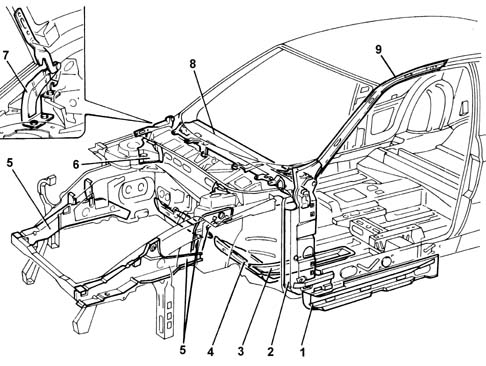
1 - Floor pan reinforcements;
2 - Rail reinforcements;
3 - Strut reinforcements;
4 - Footboard and dashboard box section reinforcments;
5 - Front pillar reinforcements;
6 - Suspension attachment reinforcements;
7 - Bonnet retaining hooks;
8 - Facia beam;
9 - Windscreen pillar reinforcements
RESISTANCE TO SIDE IMPACTS AND ROLL-OVER
To ensure a high safety level in the case of side impacts or roll-over, the reinforcements have been designed to limit survival chamber deformation.
The following main structural changes have been made to meet this requirement:
- reinforcements on the windscreen pillars;
- reinforcements in the central pillars;
- reinforcements in the seat belt attachments;
- reinforcements in the lock striker attachments;
- beam joining central floor and front reinforcement;
- beam joining central pillars beneath roof panel.
A further important element in resistance to side impacts consists of the doors which are described in the paragraph which follows.
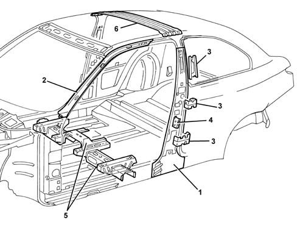
1 - central pillar reinforcements;
2 - reinforcements on the windscreen pillars;
3 - reinforcements on the seat belt attachments;
4 - reinforcements on the lock striker attachments;
5 - beam joining central floor and front reinforcement;
6 - beam joining pillars.
STRUCTURE OF THE ROOF
The roof structure stiffens the survival chamber assembly in the case of side impact or roll-over. The structure consists of the roof panel in addition to a central hoop, te central connetion hoop, bolted to the side pllars, and a box section hoop connecting the rear pillars.
Sections of sealant are applied along the edges of the hoops in contact with the roof panel. These bond parts to confer good mechanical strength while also preventing vibrations and resonance.
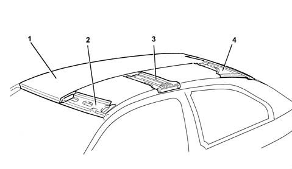
1 - Roof panel
2 - Front hoop
3 - Pillar connection hoop
4 - Rear hoop
STRUCTURE OF THE DOORS
The structure of the doors is of fundamental importance for the safety of the passengers in the case of side impacts and has therefore been designed with optimum geometry and rigidity to keep possible injury of the occupants to a minimum. The structure of the doors includes a side impact bar, waist reinforcement and front pillar reinforcement arranged to allow them to be opened after the most severe frontal and rear impacts. An expandible sealant strip is inserted between the side impact bar and the outer door trim while a heat-moulded sound-proofing panel is bonded to the inside of the trim to damp resonances.
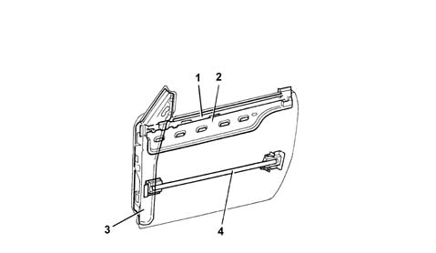
1 - Interior waist reinforcement
2 - Exterior waist reinforcement
3 - Pillar reinforcement
4 - Tubular side impact bar
RESISTANCE TO REAR IMPACTS
Side impact protection is ensured by rails and connection beams that are welded to the floor pan to create a very strong structure. This structure offers extra protection to the tank, which is secured beneath the floor pan. The rear box section trim and tail-gate ring is also a reinforced area.
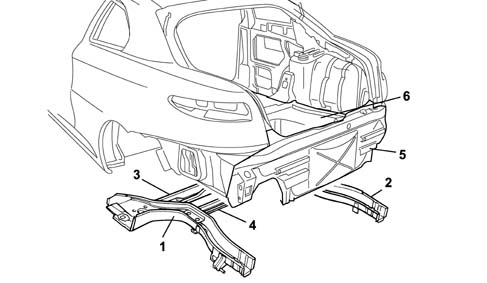
1 - Left rail
2 - Right rail
3 - Connection beam
4 - Connection beams
5 - Rear box section trim
6 - Rear floor pan
TYPICAL MEASUREMENTS
DIAGRAM FOR CHECKING UNDERBODY
This chapter contains typical body measurements that may be used by bodyshops to achieve the best results if repairs are necessary.
The deformations suffered by the bodyshell as the result of a reasonably severe impact almost always cause alterations to the shape and the structure of the different parts of the bodyshell.
It is possible to carry out a preliminary check to assess the extent of any deformation without removing the mechanical parts. To do this, use a check rod to take measurements at the points indicated in the following figure. Ensure that diagonals B-F / C-E or A -E / B-D are the same (with a tolerance of ± 2 mm).
The check operation is completed by restoring the dimensions using the appropriate equipment. This procedure must always be carried out before the damaged panels are repaired and/or replaced.
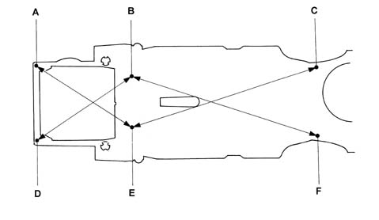
Remember to check mechanical elements which could have suffered deformation.
TYPICAL UNDERBODY DIMENSIONS
The comparative dimensions shown in the following figure are expressed in millimetres with a tolerance of about ± 2 mm. Experienced repairers will be able to determine whether these differences are due to impact or the sum of manufacturing deviations.
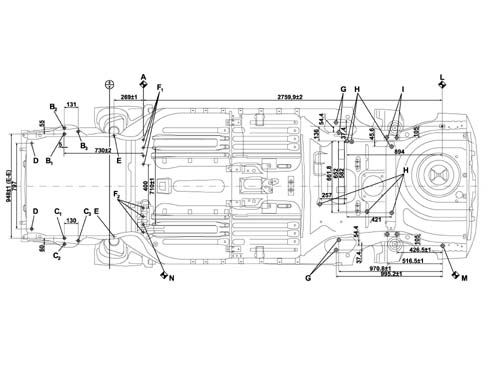
A, RH front body primary reference
B1, Power unit inner front attachment, engine side
B2, Power unit outer front attachment, engine side
B3, Power unit rear attachment, engine side
D, Front crossmember bottom attachment
C1, Power unit inner front attachment, gearbox side
C2, Power unit outer front attachment, gearbox side
C3, Power unit rear attachment, gearbox side
E, Suspension crossmember front attachment
F1, Suspension crossmember right rear attachment
F2, Suspension crossmember left rear attachment
G, Suspension track control arm attachments
H, Fuel tank attachment
I, Rear suspension crossmember attachment
WINDSCREEN COMPARTMENT DIMENSIONS
The comparative dimensions shown in the following figure are expressed in millimetres with a tolerance of about ± 2 mm.
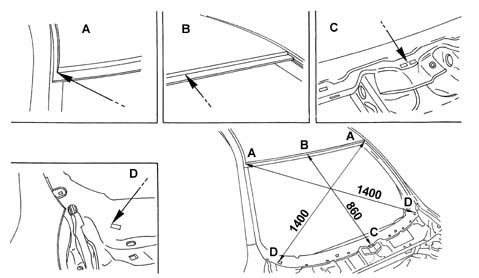
MEASURING DOOR COMPARTMENT DIMENSIONS
The comparative dimensions shown in the following figure are expressed in millimetres with a tolerance of about ± 2 mm.
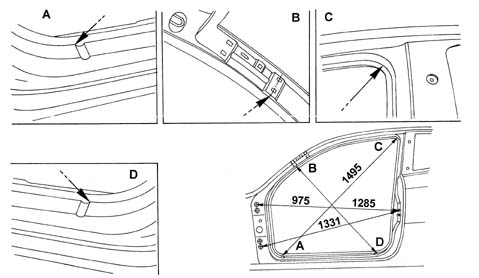
MEASURING TAIL-GATE COMPARTMENT DIMENSIONS
The comparative dimensions shown in the following figure are expressed in millimetres with a tolerance of about ± 2 mm.
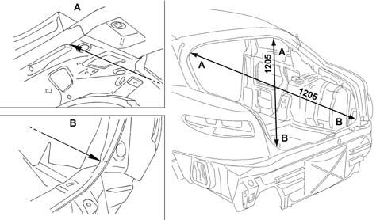
ADJUSTMENT OF MOVEABLE PARTS
The following figures show gap values (expressed in millimetres) to facilitate moveable part refitting and adjustment operations.
Adjustment methods are described in the sections containing the procedures for removing and refitting the moveable parts.
MEASUREMENT POINTS ON THE VEHICLE
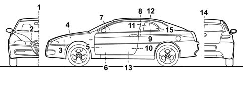
GAP VALUES
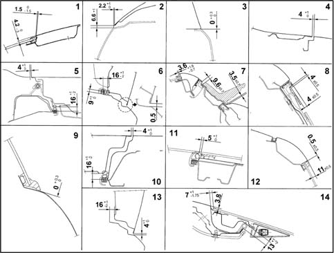
MEASUREMENT POINTS ON THE VEHICLE
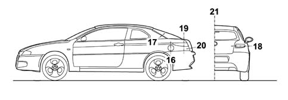
GAP VALUES
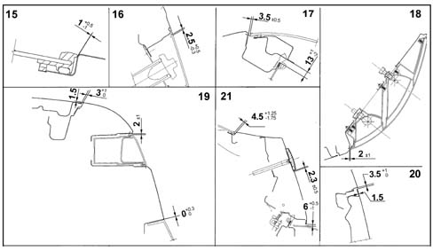
PREVENTATIVE SAFETY
SOUND INSULATION
The vehicle is very quiet and the noise level at a speed of 120 km/hour in fifth gear is 70 decibels.
Driving comfort (i.e. passenger compartment noise levels and roominess) has been improved mainly by insulating against road surface and mechanical noise by applying heat-expandible soundproofing materials and also taking special care over parts assembly and aerodynamics.
The soundproofing materials used to lower noise level are mainly bituminous. Their role is to deaden the noise generated by mechancial vibrations from areas such as the underbody, door interior and external environment.
The heat-expandible materials are synthetic rubbers or resins. Their function is to fill in boxed sections to eliminate sound propogation (wind noise). When the body is placed inside the paint-stoving ovens, these materials expand (up to ten times) and vulcanise so that they bond to the inner surfaces of panels with which they come into contact and fill the cavity.
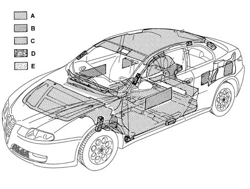
A - Sound-insulating materials
B - Soundproofing materials
C - Sound-deadening materials
D - Heat expandible materials
D - Preformed synthetic blocks
The following measures have been taken to achieve an optimum level of sound insulation:
- insertion of heat-expandible septa in the rails, windscreen and rear window pillars, central pillars and spoilers;
- insertion of preformed synthetic blocks into central pillar body nodes to prevent vibrations being transmitted into the passenger compartment;
- damping lining for panels through application of bituminous heat labile materials before painting;
- sound-deadening linings for the front of the dashboard, the front and rear running boards, the load platform and side panels with pre-formed, composite panels;
- sound-absorbent trim for the bonnet and roof;
- use of double-faced seals in the cable ducting holes between engine bay and passenger compartment;
- a thorough check of the sealants.
All the engines and mechanical components fitted to the car belong to a new generation engineered for improved acoustic/vibrational qualities.
Good aerodynamics have been ensured by improving car shape and adjusting the profiles of components that impair acoustic comfort:
BODYSHELL PROTECTION
The bodyshell has been designed to be resistant for many years (8 years for perforation, 10 years for structural weakening) to any kind of environmental attacks as far as both the internal parts, which are not visible but potentially subject to corrosion, and the external parts, subject above all to damage which could adversely affect the appearance of the vehicle, are concerned.
This result has been achieved by designing the structure of interior panels to limit exposure to corrosive infiltrations and making widespread use of galvanised panels.
Galvanising
On the vehicle 88% of the bodyshell consists of panels which have been galvanized, divided into 75% twin galvanized panels and 13% single galvanized. Both the outer parts and the moveable parts are made completely from double galvanized panels with the sole exception of the roof which is made from a panel which is not galvanized as it is not very subject to corrosion.
Following the galvanizing treatment, the bodyshell is subjected to bonderization, a treatment which washes any grease or surface oxidation from the panels and to painting by cataphoresis, a treatment which is fundamental for protection and subsequent painting.
All joints between bodyshell panels are sealed to prevent infiltrations of corrosive agents.
Abrasion-proof coatings and protections
Once sealants have been applied, abrasion-proof protections are added to body areas exposed to gravel chipping. This protection offers good properties of flexibility and adhesion and also makes a considerable contribution to noise damping. All opening and holes not involved in the fastening of mechanical parts are also closed. Both materials, sealants and anti-abrasives, are then dried in the oven.
Areas afected by the application of sealants and vinyl protection
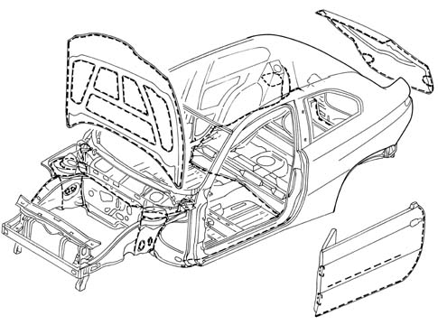
Painting
The aim of painting is to protect panels and maintain the car's appearance (gloss and richness of colour)
The car colour range includes two-coat pastel shades, metallic shades and 3 iridescent shades.
The type of colour for the vehicle and its characteristics are indicated on the identification plate which contains the following information:
- product supplier;
- enamel colour and type;
- shade code;
type of product to be used for retouches and painting in the case of service operations.
MATERIAL RECYCLABILITY
MATERIAL RECYCLING
Main specifications
According to the EEC End Of Life (EOL) directive, a total of 80% of metal and non-metallic parts should be recovered to produce new material and 5% of the remainder should be used for energy production. At present, some 75% of the vehicle consists of metal that can be easily recovered for smelting by using the different metal melting points. All the remaining parts of the vehicle, i.e. some 25% by weight, must be recovered prior to this stage. The problem of recycling plastic materials can be solved from the design; during this stage is it necessary to evaluate the possiblity of reusing the material in future components.
The aims to be considered during design include:
- ease of component disassembly;
- choice of noble materials in the recyclable polymer chain (with priority given to parts made out of a single family, e.g. PP).
Recycling does not allow the same component to be produced as the starting one because the necessary properties of reliability cannot be guaranteed or it may not be suitable.
The plastic materials are recycled in a cascade pattern. For example:
- insulating materials for building are obtained from seat upholstery;
- the material for wheel arch liners which comes from the bumpers is then used in the next stage for producing sound insulation linings and finally ends up as fuel for the production of energy.
This model has been designed so that all the plastic and rubber components weighing more than 50 grams are marked with coded symbols which identify the material for recycling and therefore all the components can be recycled.
Recycling therefore involves three successive generations of vehicles, contributing to savings in raw materials.
We are currently examining other material recycling chains, including chains unrelated to the automotive industry, following an initiative begun by F.A.Re (Fiat Auto Recycling) during the Eighties and Nineties.
Another important point is the use of heavy metals in the automotive industry. The metals in question are hexavalent Chrome (Cr6), Mercury (Hg), Cadmium (Cd) and Lead (Pb). These have been banned (Cr6) or their use is allowed only in minimum quantities and indicated in warning labels or information supplied in vehicle documentation.
The tables, in the chapter 'General information and technical data - Operating data' contain the symbols and description for the recyclable materials on the vehicle. This is because in service situations the suitable products are selected and used for internal washing, painting plastic materials, repairs, bonding, etc. The aim is to avoid possible damage with products which are not compatible with one another. In addition, marking makes it possible to select organic materials on the basis of their chemical composition. It is also advisable, in a service situation, to separate materials on the basis of their composition in order to be able to send them off more easily for recycling.
Diagram showing reuse of recycled materials
.
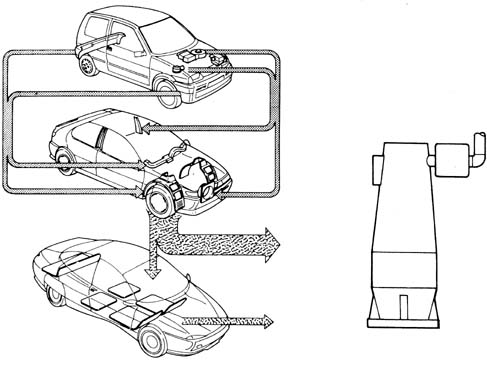
Marking a proportion of recycled material
.
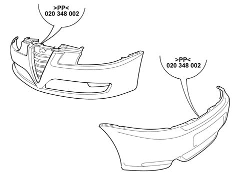
Car parts where the recycling flow is active
.
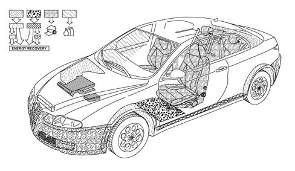